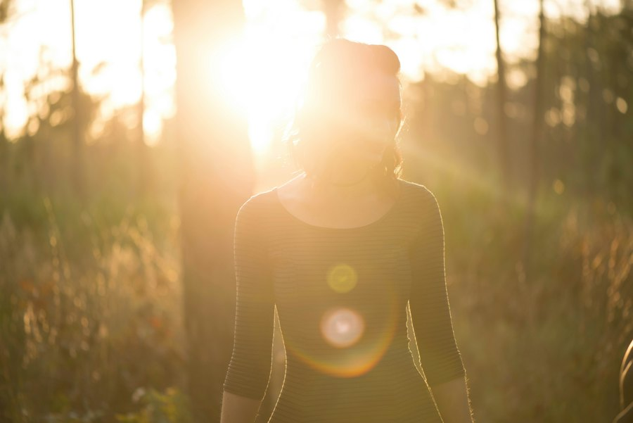
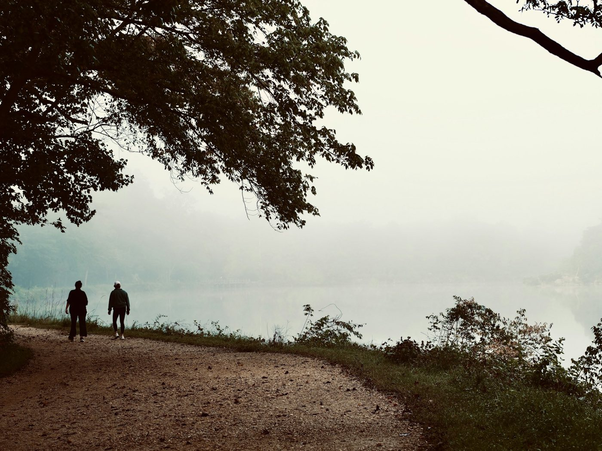

El cuerpo humano está hecho para moverse. Hoy pasamos gran parte del día sentados, y el cuerpo lo nota: rigidez, cansancio, dolor de espalda y poca energía. Moverse mejora el ánimo, ayuda a dormir mejor, fortalece los huesos y reduce el riesgo de enfermedades del corazón y de diabetes.
La Organización Mundial de la Salud recomienda que los adultos acumulen entre 150 y 300 minutos de actividad moderada a la semana, más ejercicios de fuerza dos días. Equivale a unos 20 o 30 minutos diarios, y todo cuenta: caminar rápido, montar en bicicleta, bailar, subir escaleras.
Moverse un poco es mejor que nada. Moverse más es mejor que poco.
No necesitas gimnasio ni ropa especial. Busca algo que disfrutes lo suficiente como para volver mañana. Si odias correr, no corras: camina con alguien, baila en tu cuarto o juega un partido con amigos.

1 minuto para calentar.
3 series de 10, bajando despacio.
Con las rodillas apoyadas, 3 series de 8.
3 series de 12.
3 veces 20 segundos.
2 minutos, respirando lento.
Hazla tres veces por semana. Si un día solo tienes cinco minutos, haz la mitad: lo que cuenta es no romper la cadena.
Un poco de cansancio muscular es normal; el dolor agudo no lo es. Descansar también es entrenar: en las pausas el músculo se recupera y se fortalece.
Usa las escaleras, bájate un paradero antes o camina mientras hablas por teléfono. Si estudias o trabajas sentado, levántate a estirar cada hora. Todo ese movimiento suma, aunque no parezca ejercicio.